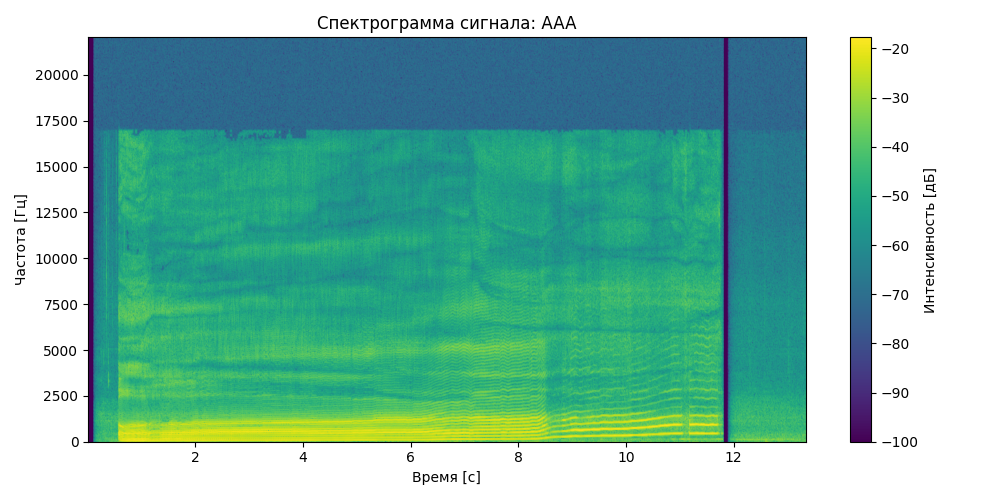
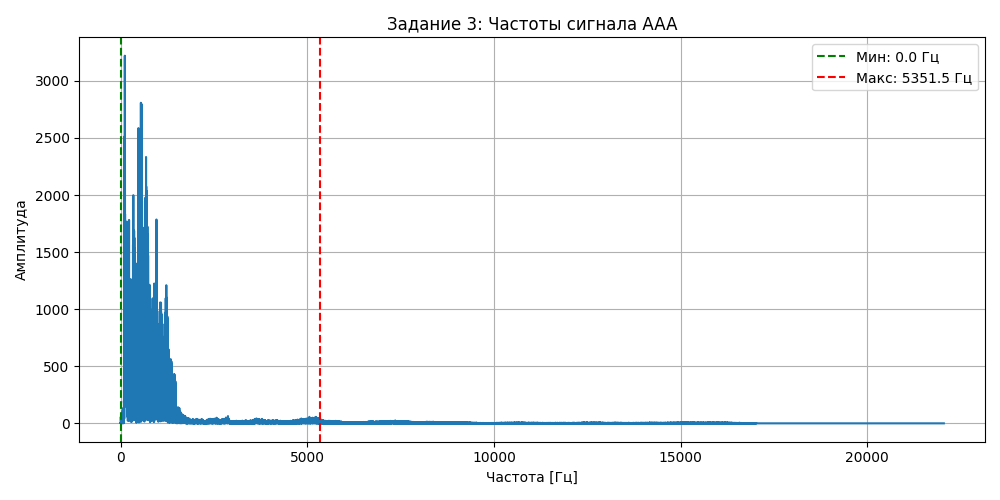
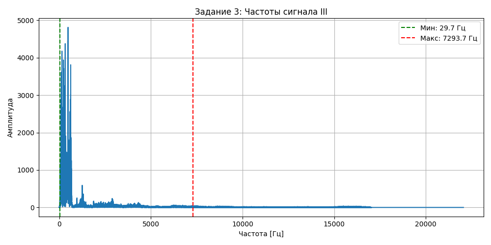
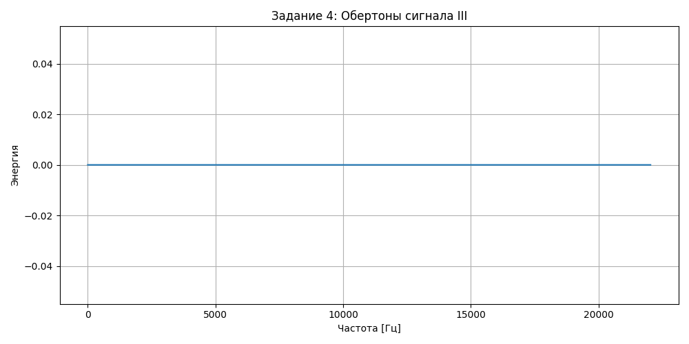
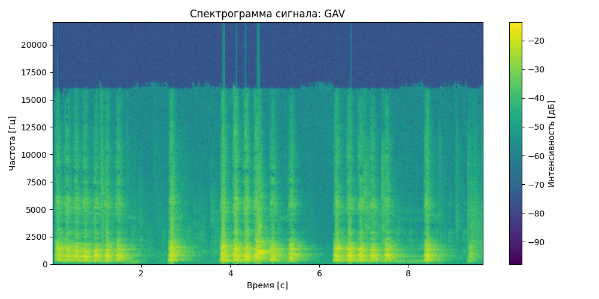
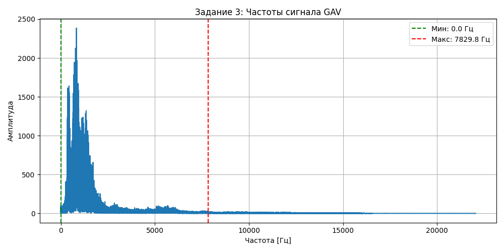
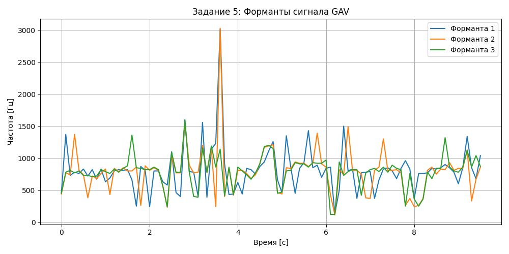

<h1 id="лабораторная-работа-10.-обработка-голоса">Лабораторная работа
№10. Обработка голоса</h1>
<h2 id="образец-собственного-голоса-для-звука-а">Образец собственного
голоса для звука «А»</h2>
<audio controls>
<source src="AAA.wav" type="audio/wav">
<p>Your browser does not support the audio element. </audio></p>
<p>   </p>
<h2 id="образец-собственного-голоса-для-звука-и">Образец собственного
голоса для звука «И»</h2>
<audio controls>
<source src="III.wav" type="audio/wav">
<p>Your browser does not support the audio element. </audio></p>
<p>   </p>
<h2 id="имитация-собачьего-лая">Имитация собачьего лая</h2>
<audio controls>
<source src="GAV.wav" type="audio/wav">
<p>Your browser does not support the audio element. </audio></p>
<p>   </p>
